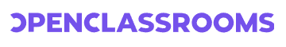

Étudiante en 2e année de BTS SIO option SISR, je recherche une alternance Bac+3 (Licence Pro ou L3) en infrastructures, systèmes et réseaux.
Lycée Jean Lurçat, Perpignan
Compétences numériques nationales
Spécialités Mathématiques & NSI — Lycée Déodat de Séverac, Céret
Collège Pierre Moreto, Thuir
Laboratoire Arago (OOB), Banyuls-sur-Mer.
Irlande — développement technique, anglais professionnel, travail en équipe internationale.
Société spécialisée en photographie & imagerie — observation et aide au quotidien.
Soutien régulier en week-ends et vacances — tâches quotidiennes et travaux saisonniers.
Mairie — entretien des espaces verts de la commune.
Activités maritimes, navigation, sécurité en milieu aquatique, esprit d'équipe.
Classée dans le top 10 %.
Réseaux et commutation : mes parcours validés au Lycée Jean Lurçat (Cisco Networking Academy).
Sensibilisation cybersécurité, sécurité opérationnelle, bonnes pratiques et gestion des risques numériques.
Vérifier
4 certificationsCybersécurité, Python, réseaux TCP/IP et cryptographie : mes parcours validés sur la plateforme.
Au fil de mes expériences, j'ai développé des compétences que je mets à profit dans chacun de mes projets, et que je serais heureux de mettre à votre service.
Alternance, stage : si vous voulez me rencontrer pour en savoir plus, n'hésitez pas à me contacter.